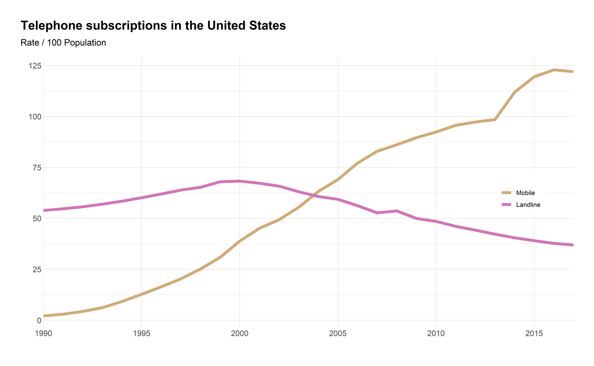
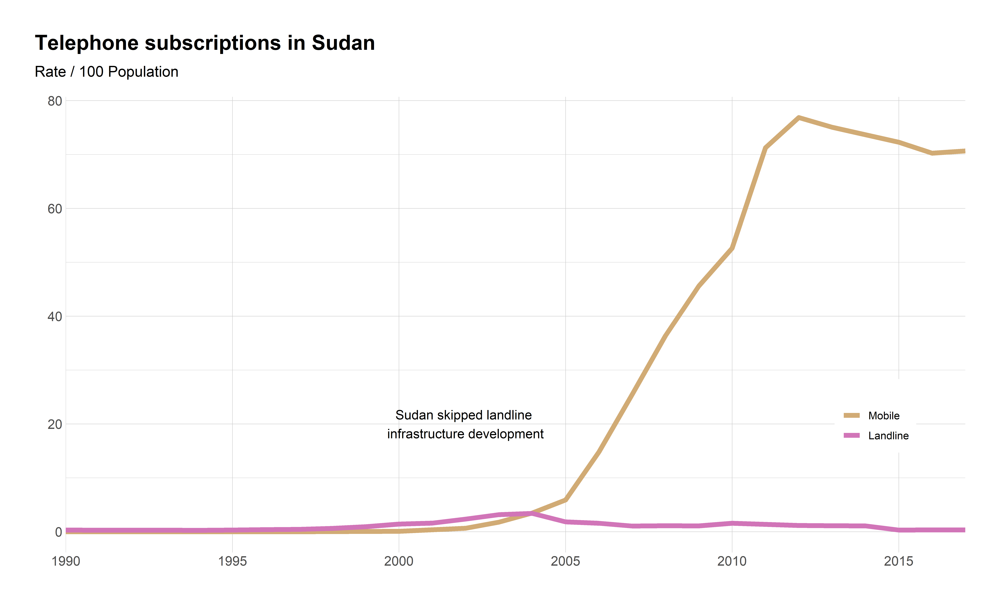
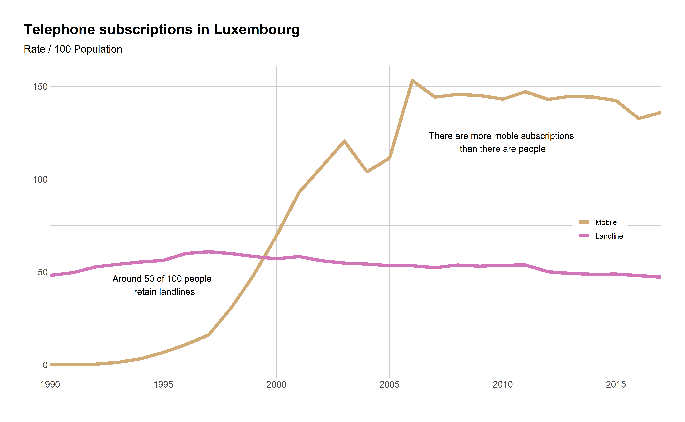
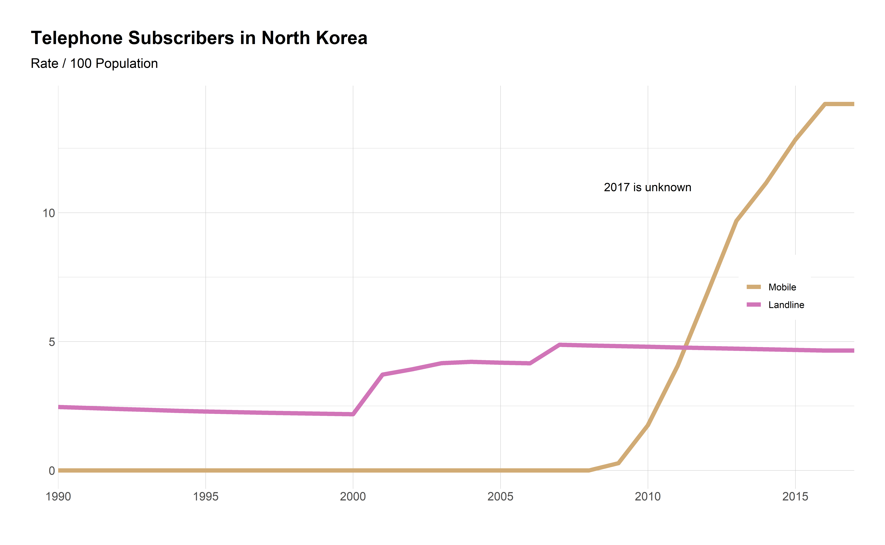
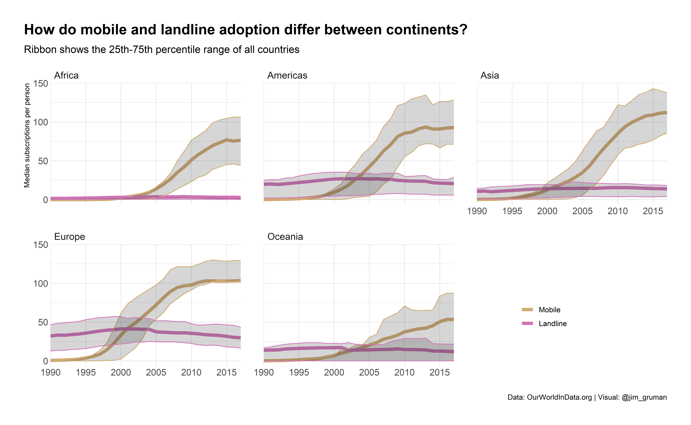
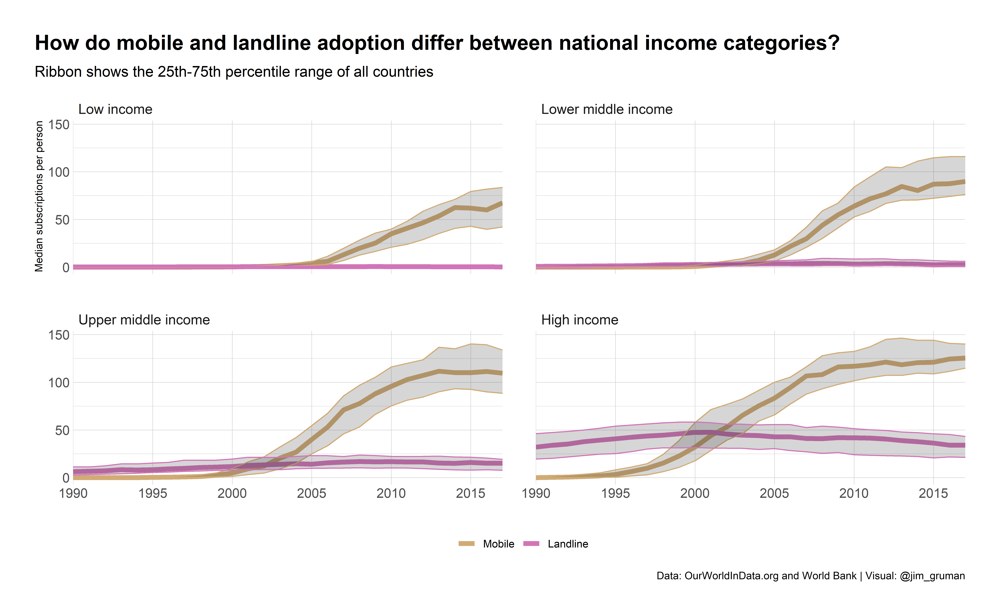
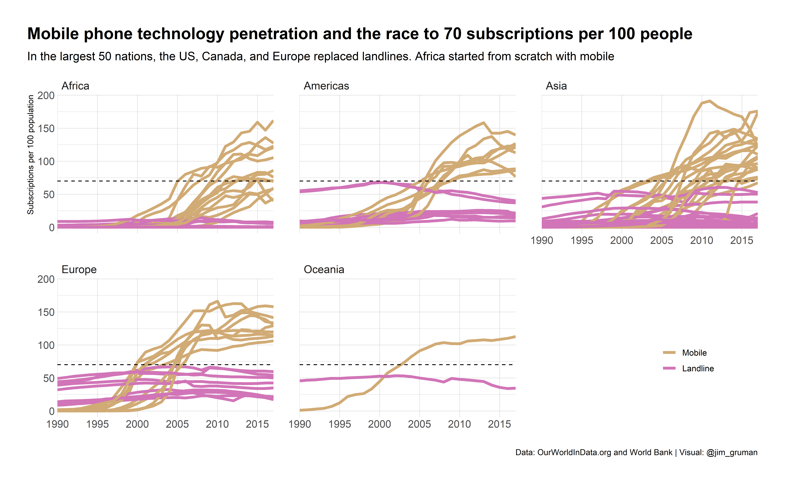
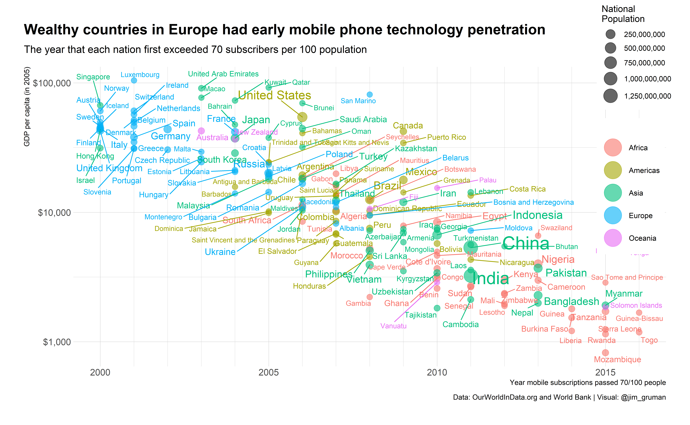

Their web page presents high quality interactive javascript visuals of time series line charts and map chloropleths as
Load the weekly Data
Download the weekly data and make available in the tt object.
tt <- tt_load("2020-11-10")
Downloading file 1 of 2: `mobile.csv`
Downloading file 2 of 2: `landline.csv`Let’s take an initial look at the format of the data available. There are two tables included. Some of the gdp data is missing
The subs figure is a rate of subscriptions per 100 population
Mobile data is only available to 2017. To make meaningful comparisons, we will stack the datasets and trim to 2017
phones <- bind_rows(
tt$mobile %>%
rename(subscriptions = mobile_subs) %>%
mutate(type = "Mobile"),
tt$landline %>%
rename(subscriptions = landline_subs) %>%
mutate(type = "Landline")
) %>%
rename(country = entity) %>%
mutate(
type = fct_relevel(type, c("Mobile", "Landline")),
year = as.integer(year)
) %>%
filter(year <= 2017L, !str_detect(country, "Serbia")) %>%
complete(type,
nesting(continent, country),
year = 1990L:2017L
) %>%
group_by(country) %>%
tidyr::fill(subscriptions) %>%
ungroup() %>%
tidyr::replace_na(list(subscriptions = 0))For the United States:
phones %>%
filter(country == "United States", !is.na(subscriptions)) %>%
ggplot(aes(year, subscriptions, color = type)) +
geom_line(size = 2) +
scale_x_continuous(
expand = expansion(mult = c(0, 0)),
breaks = seq(1990, 2020, 5),
minor_breaks = NULL
) +
scale_linetype_manual(guide = guide_legend(reverse = FALSE)) +
scale_color_manual(values = hrbrthemes::ipsum_pal()(8)[7:8]) +
labs(
title = "Telephone subscriptions in the United States",
subtitle = "Rate / 100 Population", x = "", y = "", color = ""
) +
theme(
legend.position = c(0.9, 0.5),
legend.background = element_rect(color = "white"),
axis.line.x = element_blank()
)

For the single nation of Sudan:
phones %>%
filter(country == "Sudan", !is.na(subscriptions)) %>%
ggplot(aes(year, subscriptions, color = type)) +
geom_line(size = 2) +
scale_x_continuous(
expand = expansion(mult = c(0, 0)),
breaks = seq(1990, 2020, 5),
minor_breaks = NULL
) +
scale_linetype_manual(guide = guide_legend(reverse = FALSE)) +
scale_color_manual(values = hrbrthemes::ipsum_pal()(8)[7:8]) +
labs(
title = "Telephone subscriptions in Sudan",
subtitle = "Rate / 100 Population", x = "", y = "", color = ""
) +
annotate("text",
x = 2002, y = 20,
label = "Sudan skipped landline \ninfrastructure development",
size = 4,
color = "black"
) +
theme(
legend.position = c(0.9, 0.3),
legend.background = element_rect(color = "white"),
axis.line.x = element_blank()
)

For the single nation of Luxembourg:
phones %>%
filter(country == "Luxembourg", !is.na(subscriptions)) %>%
ggplot(aes(year, subscriptions, color = type)) +
geom_line(size = 2) +
scale_x_continuous(
expand = expansion(mult = c(0, 0)),
breaks = seq(1990, 2020, 5),
minor_breaks = NULL
) +
scale_linetype_manual(guide = guide_legend(reverse = FALSE)) +
scale_color_manual(values = hrbrthemes::ipsum_pal()(8)[7:8]) +
labs(
title = "Telephone subscriptions in Luxembourg",
subtitle = "Rate / 100 Population", x = "", y = "", color = ""
) +
annotate("text",
x = 1995, y = 43,
label = "Around 50 of 100 people \n retain landlines",
size = 4,
color = "black"
) +
annotate("text",
x = 2010, y = 120,
label = "There are more moble subscriptions \nthan there are people",
size = 4,
color = "black"
) +
theme(
legend.position = c(0.9, 0.5),
legend.background = element_rect(color = "white"),
axis.line.x = element_blank()
)

For the single nation of North Korea:
phones %>%
filter(country == "North Korea", !is.na(subscriptions)) %>%
ggplot(aes(year, subscriptions, color = type)) +
geom_line(size = 2) +
scale_x_continuous(
expand = expansion(mult = c(0, 0)),
breaks = seq(1990, 2020, 5),
minor_breaks = NULL
) +
scale_linetype_manual(guide = guide_legend(reverse = FALSE)) +
scale_color_manual(values = hrbrthemes::ipsum_pal()(8)[7:8]) +
annotate("text",
x = 2010, y = 11,
label = "2017 is unknown",
size = 4,
color = "black"
) +
labs(
title = "Telephone Subscribers in North Korea",
subtitle = "Rate / 100 Population", x = "", y = "", color = ""
) +
theme(
legend.position = c(0.9, 0.5),
legend.background = element_rect(color = "white"),
axis.line.x = element_blank()
)

Descriptive statistics across continents and by national income:
summarize_subscriptions <- . %>% # making the summary re-usable
filter(!is.na(subscriptions)) %>%
summarize(
avg_subscriptions = mean(subscriptions),
median_subscriptions = median(subscriptions),
q25 = quantile(subscriptions, .25),
q75 = quantile(subscriptions, .75)
)
phones %>%
filter(!is.na(subscriptions)) %>%
group_by(year, continent, type) %>%
summarize_subscriptions() %>%
ggplot(aes(year,
avg_subscriptions,
color = type
)) +
geom_line(size = 2) +
geom_ribbon(aes(ymin = q25, ymax = q75), alpha = .2, show.legend = FALSE) +
scale_x_continuous(
expand = expansion(mult = c(0, 0)),
breaks = seq(1990, 2020, 5),
minor_breaks = NULL
) +
scale_color_manual(values = hrbrthemes::ipsum_pal()(8)[7:8]) +
facet_wrap(~continent) +
theme(legend.position = c(0.8, 0.2)) +
labs(
x = "",
y = "Median subscriptions per person",
color = "",
title = "How do mobile and landline adoption differ between continents?",
subtitle = "Ribbon shows the 25th-75th percentile range of all countries",
caption = "Data: OurWorldInData.org | Visual: @jim_gruman"
)

country_incomes <- WDI(
indicator = c(
gdp_per_capita = "NY.GDP.PCAP.PP.KD",
pop = "SP.POP.TOTL"
),
start = 2005,
end = 2005,
extra = TRUE
) %>%
as_tibble() %>%
select(code = iso3c, income, gdp_per_capita, pop) %>%
filter(!is.na(income)) %>%
mutate(income = as_factor(income)) %>%
mutate(income = fct_relevel(
income,
"Aggregates",
"Low income",
"Lower middle income",
"Upper middle income"
))
by_year_income <- phones %>%
inner_join(country_incomes, by = "code") %>%
group_by(year, income, type) %>%
summarize_subscriptions()
by_year_income %>%
ggplot(aes(year,
median_subscriptions,
color = type
)) +
geom_line(size = 2) +
geom_ribbon(aes(ymin = q25, ymax = q75),
alpha = .2, show.legend = FALSE
) +
scale_x_continuous(
expand = expansion(mult = c(0, 0)),
breaks = seq(1990, 2020, 5),
minor_breaks = NULL
) +
scale_color_manual(values = hrbrthemes::ipsum_pal()(8)[7:8]) +
facet_wrap(~income) +
labs(
y = "Median subscriptions per person", x = "",
color = "",
title = "How do mobile and landline adoption differ between national income categories?",
subtitle = "Ribbon shows the 25th-75th percentile range of all countries",
caption = "Data: OurWorldInData.org and World Bank | Visual: @jim_gruman"
) +
theme(legend.position = "bottom")

What are ways we could summarize stats for each country?
country_sizes <- phones %>%
group_by(country) %>%
summarize(
avg_population = mean(total_pop, na.rm = TRUE),
.groups = "drop"
) %>%
slice_max(order_by = avg_population, n = 52)
phones %>%
semi_join(country_sizes, by = "country") %>%
ggplot(aes(year,
subscriptions,
color = type,
group = interaction(type, country)
)) +
geom_line(size = 1.5) +
scale_x_continuous(
expand = expansion(mult = c(0, 0)),
breaks = seq(1990, 2020, 5),
minor_breaks = NULL
) +
scale_color_manual(values = hrbrthemes::ipsum_pal()(8)[7:8]) +
facet_wrap(~continent) +
geom_hline(yintercept = 70, lty = 2) +
labs(
y = "Subscriptions per 100 population",
x = "",
title = "Mobile phone technology penetration and the race to 70 subscriptions per 100 people",
subtitle = "In the largest 50 nations, the US, Canada, and Europe replaced landlines. Africa started from scratch with mobile",
color = "",
caption = "Data: OurWorldInData.org and World Bank | Visual: @jim_gruman"
) +
theme(legend.position = c(0.9, 0.2))

countries_summarized <- phones %>%
filter(!is.na(subscriptions)) %>%
select(-total_pop, gdp_per_cap) %>%
pivot_wider(names_from = type, values_from = subscriptions) %>%
group_by(continent, country, code) %>%
summarize(
year_past_70_mobile = na_if(min(year[Mobile >= 70]), Inf),
peak_landline = max(Landline, na.rm = TRUE),
peak_mobile = max(Mobile),
n_mobile = sum(!is.na(Mobile))
) %>%
ungroup() %>%
inner_join(country_incomes, by = "code") %>%
filter(n_mobile >= 25) %>%
arrange(desc(year_past_70_mobile))
countries_summarized %>%
tidyr::drop_na() %>%
ggplot(aes(year_past_70_mobile,
gdp_per_capita,
color = continent,
size = pop
)) +
geom_point(alpha = 0.6) +
geom_text_repel(aes(label = country), show.legend = FALSE) +
scale_y_log10(labels = dollar) +
scale_x_continuous(
expand = expansion(mult = c(0.05, 0.05)),
breaks = seq(1990, 2020, 5),
minor_breaks = seq(1990, 2019, 1)
) +
scale_color_discrete(guide = guide_legend(override.aes = list(size = 10))) +
scale_size_continuous(
labels = comma,
range = c(3, 8)
) +
labs(
y = "GDP per capita (in 2005)",
x = "Year mobile subscriptions passed 70/100 people",
title = "Wealthy countries in Europe had early mobile phone technology penetration",
subtitle = "The year that each nation first exceeded 70 subscribers per 100 population",
size = "National \nPopulation",
color = "",
caption = "Data: OurWorldInData.org and World Bank | Visual: @jim_gruman"
) +
theme(
legend.position = c(0.95, 0.8),
legend.background = element_rect(color = "white")
)

sessionInfo()R version 4.0.3 (2020-10-10)
Platform: x86_64-w64-mingw32/x64 (64-bit)
Running under: Windows 10 x64 (build 19041)
Matrix products: default
locale:
[1] LC_COLLATE=English_United States.1252
[2] LC_CTYPE=English_United States.1252
[3] LC_MONETARY=English_United States.1252
[4] LC_NUMERIC=C
[5] LC_TIME=English_United States.1252
attached base packages:
[1] stats graphics grDevices utils datasets methods base
other attached packages:
[1] ggrepel_0.8.2 ggtext_0.1.0.9000 visdat_0.5.3 naniar_0.6.0
[5] WDI_2.7.1 scales_1.1.1 tidytuesdayR_1.0.1 hrbrthemes_0.8.6
[9] forcats_0.5.0 stringr_1.4.0 dplyr_1.0.2 purrr_0.3.4
[13] readr_1.4.0 tidyr_1.1.2 tibble_3.0.4 ggplot2_3.3.2
[17] tidyverse_1.3.0 workflowr_1.6.2
loaded via a namespace (and not attached):
[1] fs_1.5.0 usethis_1.6.3 lubridate_1.7.9 httr_1.4.2
[5] rprojroot_1.3-2 R.cache_0.14.0 tools_4.0.3 backports_1.2.0
[9] R6_2.5.0 DBI_1.1.0 colorspace_2.0-0 withr_2.3.0
[13] tidyselect_1.1.0 curl_4.3 compiler_4.0.3 git2r_0.27.1
[17] extrafontdb_1.0 cli_2.1.0 rvest_0.3.6 xml2_1.3.2
[21] labeling_0.4.2 systemfonts_0.3.2 digest_0.6.27 rmarkdown_2.5
[25] R.utils_2.10.1 pkgconfig_2.0.3 htmltools_0.5.0 extrafont_0.17
[29] styler_1.3.2 dbplyr_2.0.0 rlang_0.4.8 readxl_1.3.1
[33] rstudioapi_0.13 generics_0.1.0 farver_2.0.3 jsonlite_1.7.1
[37] R.oo_1.24.0 magrittr_1.5 Rcpp_1.0.5 munsell_0.5.0
[41] fansi_0.4.1 gdtools_0.2.2 lifecycle_0.2.0 R.methodsS3_1.8.1
[45] stringi_1.5.3 whisker_0.4 yaml_2.2.1 RJSONIO_1.3-1.4
[49] grid_4.0.3 promises_1.1.1 crayon_1.3.4 haven_2.3.1
[53] gridtext_0.1.1 hms_0.5.3 knitr_1.30 ps_1.4.0
[57] pillar_1.4.6 reprex_0.3.0 glue_1.4.2 evaluate_0.14
[61] memuse_4.1-0 modelr_0.1.8 vctrs_0.3.4 httpuv_1.5.4
[65] selectr_0.4-2 Rttf2pt1_1.3.8 cellranger_1.1.0 gtable_0.3.0
[69] rematch2_2.1.2 assertthat_0.2.1 xfun_0.19 broom_0.7.2
[73] later_1.1.0.1 ellipsis_0.3.1